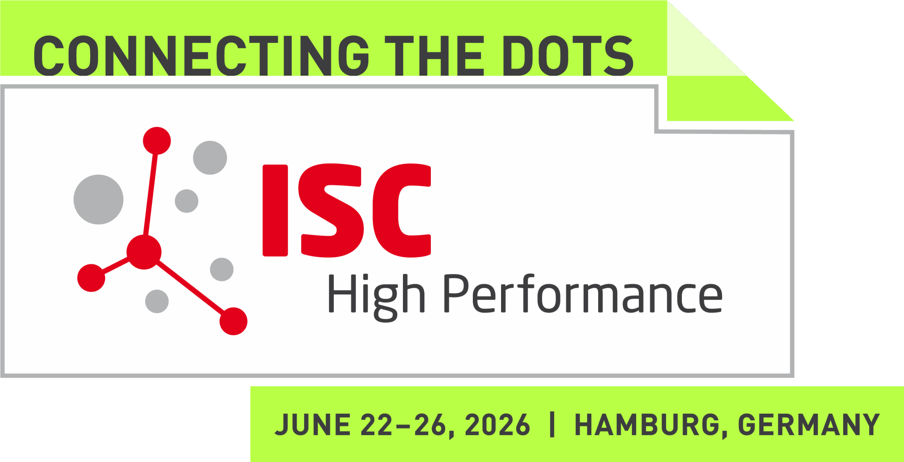

ISC 2026 Workshop · June 26, 2026 · 9:00 a.m. – 6:00 p.m.
Performance Engineering, Challenges and Opportunities
CCH - Hall X6 - 1st Floor, Hamburg, Germany
In conjunction with ISC High Performance 2026

| Time | Topic | Presenter |
|---|---|---|
| 9:00–11:00 | Invited Talk: performance inefficiencies in LLM fine-tuning | Gokcen Kestor, Barcelona Supercomputing, Spain |
| PreLoRA: Hybrid Pre-training of Vision Transformers with Full Training and Low-Rank Adapters | Murali Emani, Argonne National Laboratory, USA | |
| MCast: Generalizing HPC Application Runtime Prediction | Avani Wildani, Cloudflare | |
| Panel Discussion: The Rise of HPC-Driven AI Factories Worldwide Panel Moderator: Vijeta Sharma, MIMER AI Factory, Sweden |
|
|
| 11:00–11:30 | ☕ Coffee Break | |
| 11:30–13:00 | An Autotuning-based Hyperparameter Optimization Framework for Mixed-kernel SVM Classifications in Science and Engineering | Xingfu Wu, Argonne National Laboratory, USA |
| Resource-aware Computation-Communication Overlap for multi-GPU ML Workloads | Minyu Cui, Chalmers University of Technology, Sweden | |
| Optimizing Teacher-Student Partitioning for Scalable Knowledge Distillation on HPC Systems | Adrian Perez Dieguez, Qualcomm, USA | |
| LLMs in Performance Engineering: New Workflows for Autonomous Code Optimization | Anja Gerbes, GWDG, Germany | |
| 13:00–14:00 | 🍲 Lunch Break | |
| 14:00–16:00 | Keynote: Challenges and Opportunities in Training Next-Generation Mixture of Expert Models on HPC Platforms | Sajal Dash, Oak Ridge National Laboratory, USA |
| TiledAttention: a CUDA Tile SDPA Kernel for PyTorch | Taimur Khan, UFZ, Germany | |
| Performance Engineering for the SEODA Project for CASPIr (Lightning Talk) | Buket Benek Gursoy, Irish Centre for High-End Computing, Ireland | |
| JumpLM: Simultaneous Visualization of Hardware and LLM Metrics for a Joint Configuration Tuning | Lena Jurkschat, ScaDS.AI, Germany | |
| AI Application Benchmarking: Power-Aware Performance Analysis for Vision and Language Models | Lukas Schröder, NHR@FAU, Germany | |
| 16:00–18:00 | ☕ Coffee Break / open discussions |
How can AI workloads be engineered for optimal performance in modern HPC environments?
The rapid advancement of Artificial Intelligence (AI) and Machine Learning (ML) has positioned High-Performance Computing (HPC) systems as indispensable platforms for developing, training, and executing these workloads. However, the architectural complexity and batch-oriented design of traditional HPC systems pose unique challenges distinct from those encountered in resource-elastic environments such as clouds.
The parallelization characteristics, input/output requirements, and dynamic workflows of AI workloads demand innovative techniques for efficient utilization of HPC resources. Moreover, the performance engineering of such workloads is crucial to achieve scalability, portability, and reproducibility across diverse system architectures.
This workshop aims to bring together researchers, practitioners, and system developers to discuss engineering challenges, performance optimization, and emerging opportunities at the intersection of AI and HPC. It invites among others, papers that present experimental results, architectural insights, performance studies, and best practices advancing the convergence of these domains.
We invite submissions of original research papers, case studies, and experience reports that address the challenges and opportunities at the intersection of AI/ML and HPC. The papers submitted to this workshop will be published in LNCS, Springer.
We welcome submissions on the following topics, including but not limited to:
For questions, please contact the General Chairs.